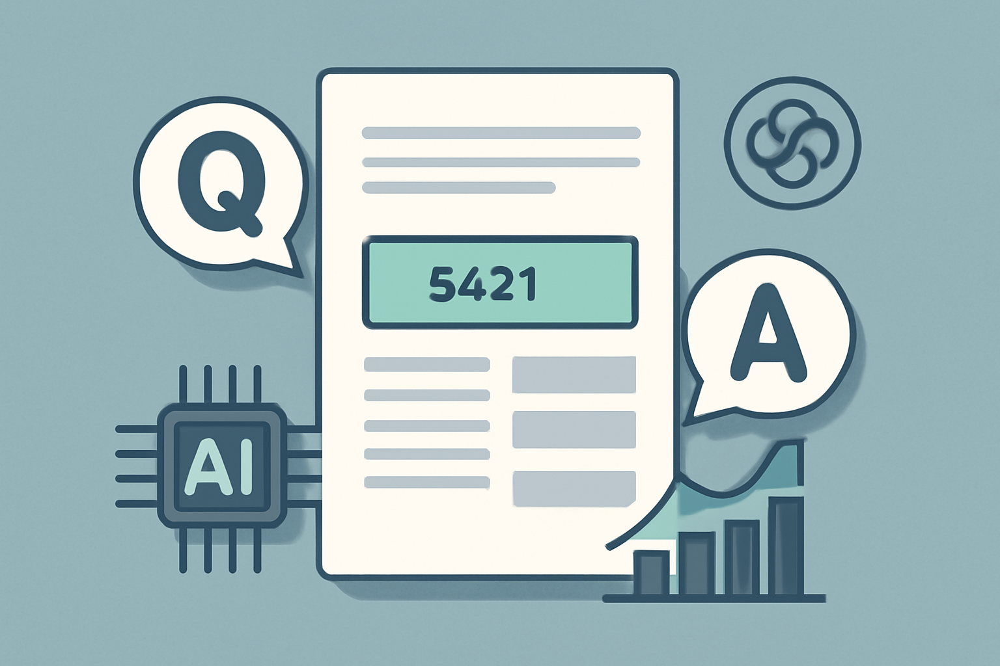

01 Hugging Face
문서 이미지에서 답을 찾는 질의응답 모델
mit 사내 사용 가능공개일 03.18

문서 질의응답은 검색과 입력 자동화의 중간 지점에 있다. 문서를 통째로 요약하는 모델과 달리, 이 과업은 필요한 항목을 정확히 집어내야 한다. 금융IT 현장에서는 청구서와 증빙, 신청서 처리에 먼저 닿는다. 이번 후보들은 OCR을 쓰는 방식과 쓰지 않는 방식을 함께 보여준다.
무엇을 하는 모델인가
이 모델은 문서 이미지에 질문을 붙여 답을 뽑는 문서 질의응답용 모델이다. 청구서나 영수증, 일반 문서에서 필요한 항목을 찾는 자리에 맞는다. 예시로는 청구서 번호와 구매 금액을 찾는다. 문서 내용을 읽기 위해 OCR이 함께 들어간다.
크기와 필요한 장비
- 파라미터 수는 카드에 밝히지 않았다.
- safetensors 형식을 제공한다.
- 카드는 양자화본 유무를 밝히지 않았다.
- 카드는 필요한 메모리를 밝히지 않았다.
- 추론에는 transformers, PyTorch, PIL, pytesseract가 필요하다.
- 최근 버전의 transformers가 필요하다고 적었다.
라이선스와 사내 반입
- 카드에 라이선스 조건을 밝히지 않았다.
- 상업 이용 가능 여부는 확인 필요다.
- 접근 승인 필요 여부는 카드에 밝히지 않았다.
- 재배포와 파생물 배포 조건도 확인 필요다.
한국어와 다국어
요약 태그에는 영어만 적혀 있다. 카드는 지원 언어를 별도로 밝히지 않았다. 한국어 성능이나 한국어 예시는 없다.
무엇으로 검증했나
카드는 정식 벤치마크 표를 싣지 않았다. 예시 추론 결과로 두 건의 답과 점수만 공개했다. 이 값은 벤더 예시 실행 결과다. 독립 평가나 비교 대상은 붙지 않았다.
| 평가 이름 | 무엇을 재나 | 결과 |
|---|---|---|
| 예시 추론 1 | 청구서 번호 답변 예시 | score 0.9943977, answer us-001 |
| 예시 추론 2 | 구매 금액 답변 예시 | score 0.9912159, answer $1,000,000,000 |
언제 이것을 고르나
OCR을 붙인 문서 질의응답 흐름이 이미 사내에 있으면 이 모델을 먼저 볼 만하다. 같은 문서 질의응답 후보인 naver-clova-ix/donut-base-finetuned-docvqa는 OCR 없이 문서를 읽는 쪽을 내세운다. 반면 이 모델은 pytesseract를 요구하므로 기존 OCR 운영 경험이 있을 때 맞는다. 라이선스 조건이 카드에 없으므로, 바로 반입하기보다 법무와 구매 검토를 먼저 붙여야 한다.
주요 용어
원문 정보
제목: impira/layoutlm-document-qa
공개일: 2023.03.18